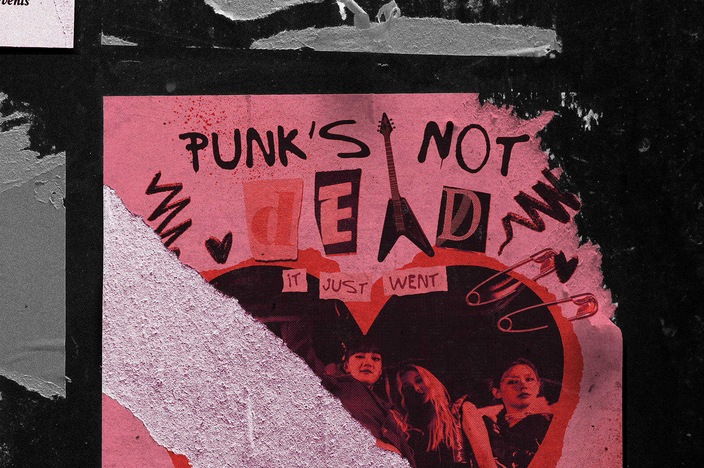

WORK
ABOUT
Hello! I’m a branding and communications designer based out of Vancouver, BC. I specialize in brand development, art direction and illustration. When I'm not designing, I enjoy drawing, reading and creative journaling.

Recognition
Two time VFS SLAM! Contest Winner,
Fun Stuff
Instagram
Behance
Capilano Courier
Let's get in touch!
Email
LinkedIn
© 2023. Hand crafted with
❤
+ Flexbox + CSS Grid by Jasmin Linton.
Back to top